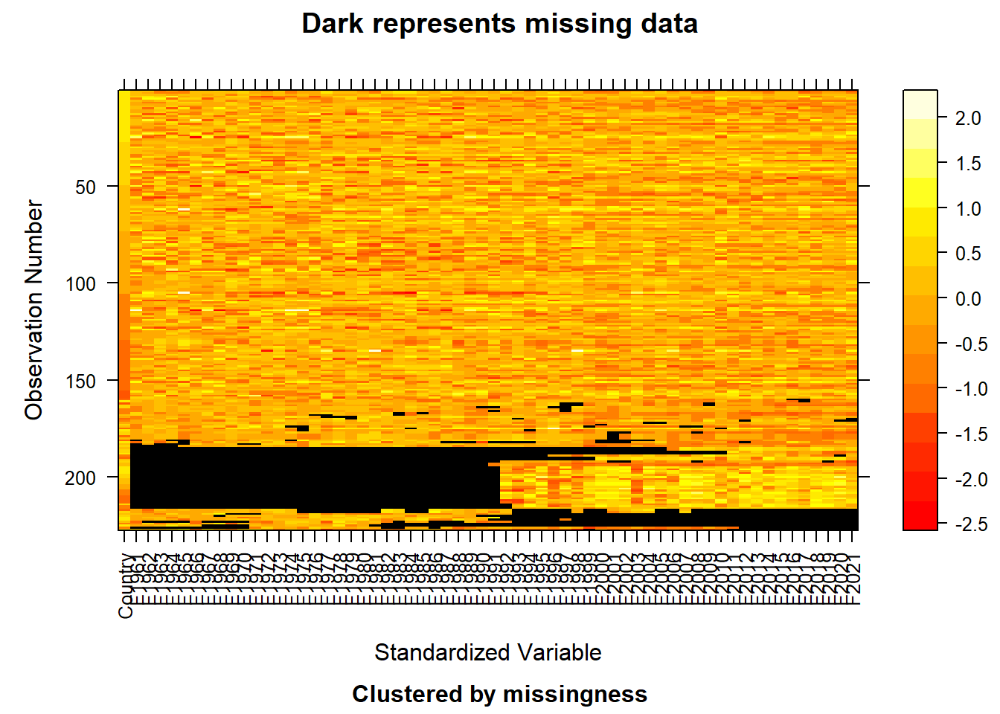

Chapter 3 Data
3.1 Sources
The topic of our project - “Climate Change” - is by nature, broad; therefore, in order to answer the various questions of concern/interest, we had to incorporate many different data sources. We will describe each of them below:
3.1.1 Annual Surface Temperature Change
https://climatedata.imf.org/datasets/4063314923d74187be9596f10d034914/explore https://www.fao.org/faostat/en/#data/ET
This data set showcases the annual estimates of mean surface temperature change from 1961 to 2021 by country, with respect to a baseline climatology (defined as the period of 1951 to 1980). The Food and Agriculture Organization of the United Nations is the group that is responsible for compiling this data for public use; however, it seems like the FAO retrieves the data from elsewhere. According to its website, the information comes from the publicly available GISTEMP data, managed by NASA-GISS. With climate data, there are always a multitude of sources/options available, but I chose this specific website due to the accessible and downloadable CSV file, and the plethora of references it included. The CSV file includes 227 different countries, each with time series data from 1961 to 2021. Although there are other columns in the CSV, they are not relevant for our analysis. There are two main issues with the data: missing values and messy format. Both of these issues are easily dealt with using some data manipulation in R.
3.1.2 Atmospheric Carbon Dioxide Concentrations
https://climatedata.imf.org/datasets/9c3764c0efcc4c71934ab3988f219e0e/explore https://gml.noaa.gov/ccgg/trends/
This data set showcases the monthly atmospheric carbon dioxide levels, presented at the World level in parts per million (ppm). The data is collected by the Global Monitoring Laboratory of NOAA (specifically measured at Mauna Loa Observatory, Hawaii). The data from this region actually constitutes the longest running direct measurement of carbon dioxide in the world. There were other measures of carbon dioxide available, but since most climate analysis utilizes the data from Mauna Loa, I did not want to deviate from that. The CSV file includes 1536 rows, with the world carbon dioxide concentration (in percent and parts per million) from 1958 to 2022. There are other categorical variables in the data that are not necessary for our analysis. The data itself is relatively clean; however, the format of file (like changing the dates into the correct format) will need to be slightly tweaked.
3.1.3 Change in Mean Sea Levels
https://climatedata.imf.org/datasets/b84a7e25159b4c65ba62d3f82c605855/explore
This data set showcases the changes in mean sea levels across 24 regions of the world, and the specific measurements (in millimeters) are estimated from satellite radar altimeters. The data is collected by the Laboratory for Satellite Altimetry from NOAA. These estimates of sea level rise are based on measurements from satellite radar altimeters. These satellites “basically determine the distance from the satellite to a target surface by measuring the satellite-to-surface round-trip time of a radar pulse.” Like the previous data sources, I chose it due to the reputation of NOAA as an organization. The CSV file has 35,379 rows, which encompasses the time series sea level change data from 1992 to 2022 for 24 regions around the world. Other categorical variables exist, but are not necessary for our analysis. The data does not have any apparent issues, but the formatting (like with most data) will have to be tailored to our specific project.
3.1.4 GDP and Population
https://stats.oecd.org/index.aspx?DataSetCode=PDB_LV
This data set showcases the level of GDP per capita and productivity, including GDP, total population, GDP per head of population, GDP per hour worked, GDP per person employed, etc. in different countries from 1970 to 2021. The data is collected by Organisation for Economic Co-operation and Development (OECD) and updated regularly. This data set can be downloaded as a csv file, containing 51,746 entries and 17 columns. It is well formatted and does not contain any null values, thus does not require data cleaning and preprocessing.
3.1.5 Air Pollution
https://www.who.int/data/gho/data/themes/air-pollution/who-air-quality-database https://www.iqair.com/us/world-most-polluted-countries
The first dataset showcases PM2.5, PM10, and NO2 concentration and temporal coverage from 2010 to 2018 in different countries and cities. The data is collected by WHO, and as described on the website, “the primary sources of data were official reports of countries sent to WHO upon request.” It can be downloaded as an excel file and contains 32191 entries and 15 columns. This dataset contains null values and other irrelevant information, thus it requires cleaning and preprocessing. Since we want to compare the air pollution before and after the rise of Covid-19, around 2019, we found another dataset which contains more up-to-date information. The second dataset from IQAir showcases PM2.5 concentration from 2018 to 2021 in 117 countries and contains 472 entries and 5 columns. The data cannot be downloaded, therefore, we choose to do web scraping and perform further cleaning and transformation. Finally, we combine these two datasets and do further analysis.
3.1.6 Greenhouse Gas Emission
This data set showcases sector-level greenhouse gas (GHG) emissions for 194 countries and the European Union from 1990-2019. This data set is a little messy for time series plots, but it is easy to tidy by R.
3.1.7 Change in Sea Ice Volume
http://psc.apl.uw.edu/research/projects/arctic-sea-ice-volume-anomaly/data/.
This data set showcases the monthly changes in sea ice volume across the world from 1979 through present. This data set is in ASCII table format with 12 columns for each month and 44 rows for years 1979-present. In order to observe the trend of sea ice volume by years, we calculated the average changes in every year and plot them in time series.
3.1.8 Change in Forests
https://www.fao.org/faostat/en/#data/GF
This data set showcases forests consists of CO2 emissions and removals corresponding to forest carbon stock changes. Statistics are available by country from 1990 to 2020. The dataset is a well-formated csv file with no missing values. Therefore, it does not require any data cleaning and pre-processing.
3.1.9 Land Use in Agriculture
https://www.fao.org/faostat/en/#data/RL
The data are collected via the FAO Questionnaire on Land Use, Irrigation and Agricultural Practices, based on FAO Land Use classification. Statistics are available by country from 1961 to 2020. It shows the global land use in 46 categories, such as primary forest, agricultural practices and so on. In this project, we will discuss the changes in agriculture, so we only select the land use in the agriculture category.
3.2 Cleaning / transformation
Most of the data used in this project are Time Series data for different countries of the world; therefore, depending on the type of graph or type of merge/join we want to accomplish, the cleaning/transformation will differ. We will denote some of them below:
3.2.1 GDP and Population
The original dataset about GDP is from the United Nations, which showcases the GDP by country from 1970 to 2020. However, after plotting GDP values against year grouped by country, we found that the GDP of Japan and the US are two outliers, which have GDP much higher than other countries. Comparing this data with the other information we found, we concluded that this dataset contains wrong information and decided to search for other datasets.
The original dataset about population is from United Nations, containing total population and population growth in different countries in 2010, 2015, 2017, and 2022. After exploring the data, we realized that we need more datapoints in terms of year.
Therefore, we decided to use a new dataset from OECD which contains more comprehensive data, including the GDP, population, and other information in each country from 1970 to 2021.
3.2.2 Air Pollution
The first air pollution dataset from WHO contains PM2.5 concentration in different cities. We drop all the null values and compute the average PM2.5 concentration among all the cities in each country in each year. We scrape the second dataset from IQAir website, and convert it from wide to long format.
We select PM2.5 concentration from countries with top 11 highest GDP and combine these two datasets for further analysis.
3.2.3 Annual Surface Temperature Change
The temperature change data set included quite a bit of unnecessary categorical columns, therefore, as noted by the code snippet below, I removed them from the data frame. Furthermore, missing values were simply omitted from the data set for a more complete analysis going forward. In order to transform the data into a format that was easily graph-able, I used the function “melt” from the reshape2 library, which allowed for easier time series plotting. Lastly, our group unanimously decided to only analyze the top 11 countries (based on GDP), since it is nearly impossible to evaluate 200+ countries of the world.
3.2.4 Atmospheric Carbon Dioxide Concentrations
The carbon dioxide data set did not require much transformation, as I only needed to remove some unnecessary columns and make sure all of the measurements were in parts per million.
3.2.5 Change in Mean Sea Levels
The sea level change data set required quite a bit of transformation before it was plot-ready. First, all of the unnecessary categorical variables were removed, and the “Date” column was formatted into a more traditional Date format. Furthermore, multiple “group_by”s were conducted in order to output the mean sea level change of each calendar year for each of the regions included in the data set.
3.2.6 Greenhouse Gas Emission
The greenhouse gas emission data set included quite a bit of transformation. First, we used mutate_all to convert all columns to characters. The column names X1990-X2019 represent values of the year variable, and the values in these columns represent the values of the greenhouse gas emissions. In order to plot the data set in time series, we used the pivot_longer to tidy the data.
3.2.7 Change in Forests
The forest data set did not require much transformation. Since we only need the changes in forests area, we just selected the data in forestland from this data set.
3.3 Missing value analysis
Two of our data sets included some missing values; we will denote their analysis below.
3.3.1 Annual Surface Temperature Change
## Country F1961 F1962 F1963 F1964 F1965 F1966 F1967 F1968 F1969 F1970 F1971 F1972 F1973 F1974 F1975 F1976 F1977 F1978
## 0 36 35 36 37 37 33 35 36 36 37 34 32 32 34 37 35 36 35
## F1979 F1980 F1981 F1982 F1983 F1984 F1985 F1986 F1987 F1988 F1989 F1990 F1991 F1992 F1993 F1994 F1995 F1996 F1997
## 36 34 35 35 38 37 37 36 36 36 35 36 37 16 18 18 16 16 19
## F1998 F1999 F2000 F2001 F2002 F2003 F2004 F2005 F2006 F2007 F2008 F2009 F2010 F2011 F2012 F2013 F2014 F2015 F2016
## 15 17 16 18 15 12 13 14 11 10 14 13 12 10 13 11 11 11 12
## F2017 F2018 F2019 F2020 F2021
## 13 11 12 13 13## NOTE: The following pairs of variables appear to have the same missingness pattern.
## Please verify whether they are in fact logically distinct variables.
## [,1] [,2]
## [1,] "F1972" "F1973"
## [2,] "F1987" "F1988"
## [3,] "F2013" "F2014"
## [4,] "F2013" "F2015"
## [5,] "F2013" "F2018"
## [6,] "F2014" "F2015"
## [7,] "F2014" "F2018"
## [8,] "F2015" "F2018"
Climate data is inherently messy, and with that messiness, comes the potential to include a significant amount of missing data. As shown in the heat map above, there are two significant chunks of data that are black or missing. The majority of missing data in this data set comes between the years of 1961 and 1991, with 1992 - 2021 representing a smaller percentage of missing values. This observation aligns with logic, as it is more difficult to maintain and obtain data that is older, as opposed to newer data. Additionally, we are typically less confident in the data values from centuries ago; although this data set does not include data that dates that far back, the conclusion stays constant. In order to clean the data, we simply dropped the NA values from the data set, as the countries of interest to us were relatively whole, and the entire data is large enough to still generate meaningful analys
3.3.2 Air Pollution
## NOTE: In the following pairs of variables, the missingness pattern of the first is a subset of the second.
## Please verify whether they are in fact logically distinct variables.
## [,1] [,2]
## [1,] "WHO.Region" "PM2.5.(μg/m3)"
## [2,] "WHO.Region" "PM25.temporal.coverage.(%)"
## [3,] "WHO.Region" "Number.and.type.of.monitoring.stations"
## [4,] "WHO.Region" "Status"
## [5,] "PM2.5.(μg/m3)" "Status"
## [6,] "PM10.(μg/m3)" "Status"
## [7,] "NO2.(μg/m3)" "Status"
## [8,] "PM25.temporal.coverage.(%)" "Status"
## [9,] "PM10.temporal.coverage.(%)" "Status"
## [10,] "NO2.temporal.coverage.(%)" "Status"
## [11,] "Reference" "Status"
## [12,] "Number.and.type.of.monitoring.stations" "Status"
The air pollution data set from WHO contains many null values, specifically in 7 columns named PM2.5 (μg/m3), PM10 (μg/m3), NO2 (μg/m3), PM25 temporal coverage (%), PM10 temporal coverage (%), NO2 temporal coverage (%), Number and type of monitoring stations. We focus on PM2.5 (μg/m3) values. We drop the rows which are NAs in this column. Since we compute the average for each country, dropping null values has little impact on our results.